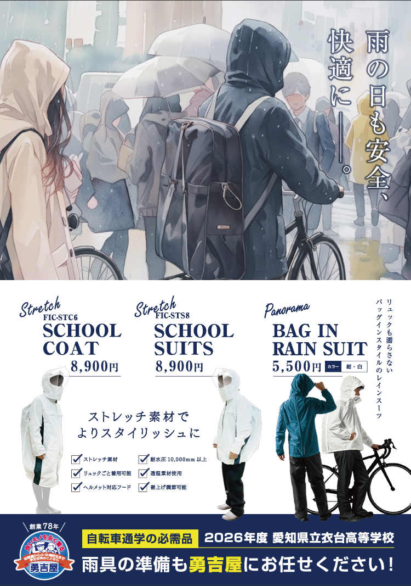
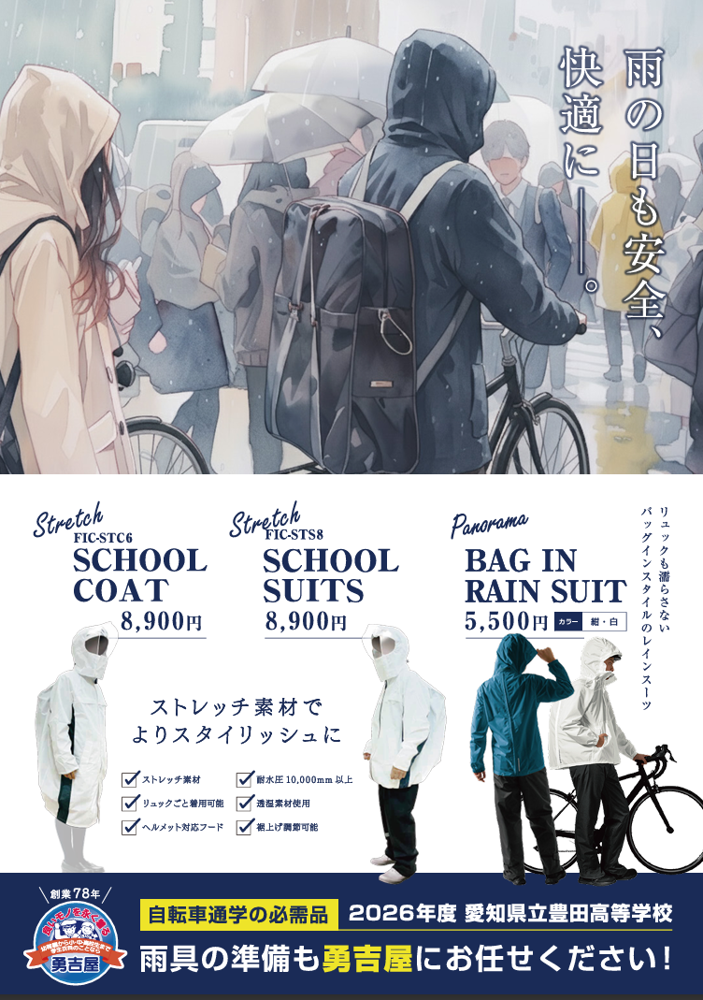
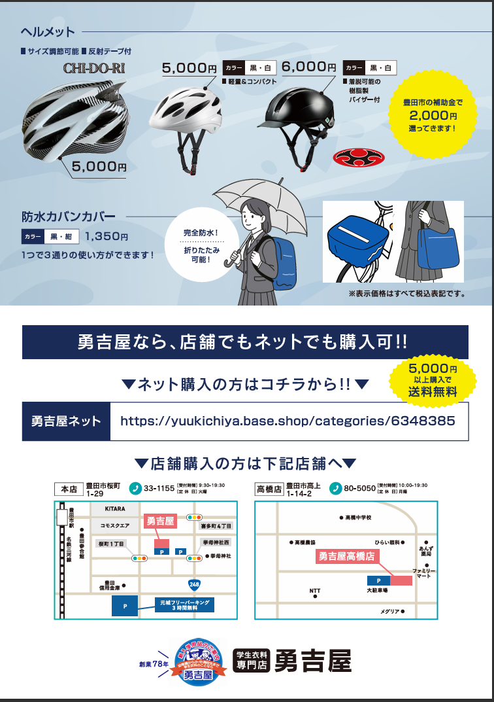
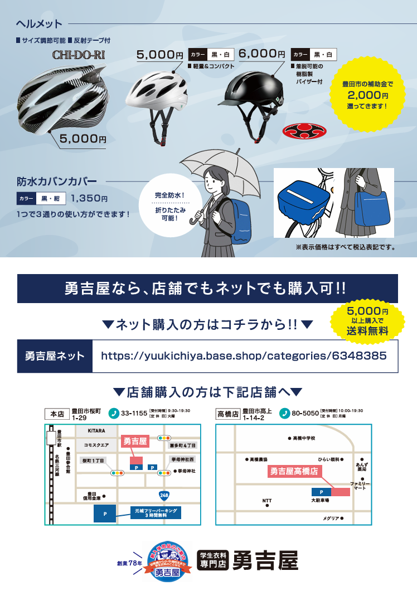
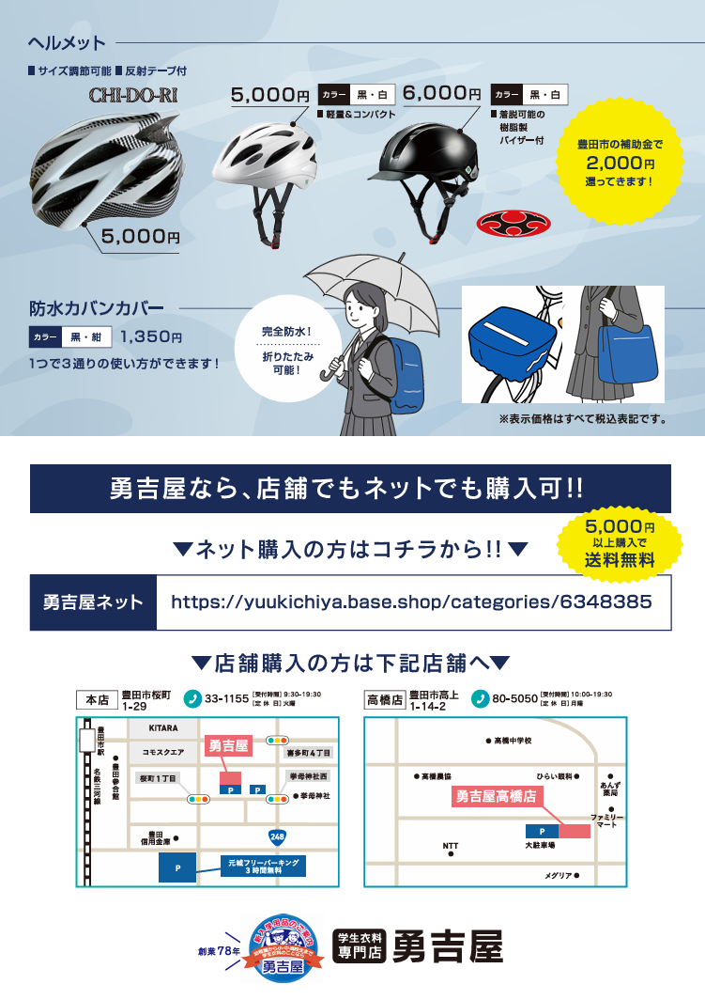
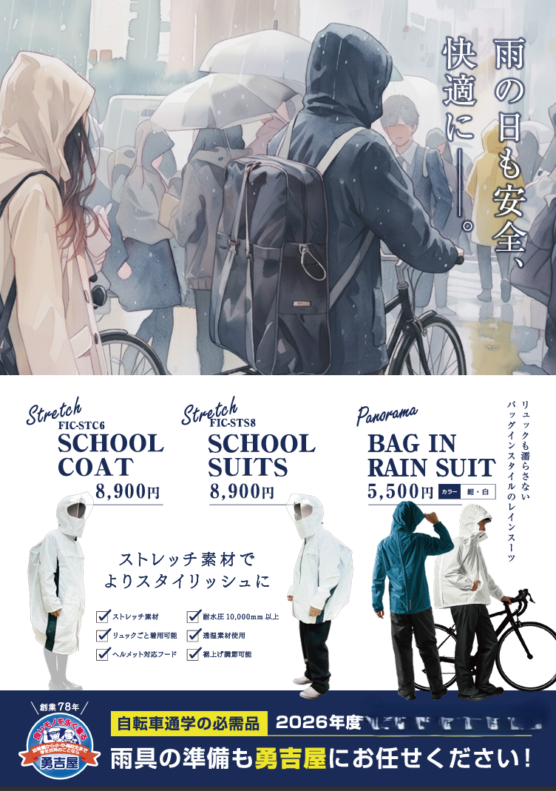

小学校
高校
幼稚園・こども園
Rainwear
高校別雨合羽・ヘルメット案内
高校別の雨合羽・ヘルメット案内を、学校ごとに確認できます。
- SCHOOL COAT 8,900円
- SCHOOL SUITS 8,900円
- BAG IN RAIN SUIT 5,500円（カラー：紺・白）
- ヘルメット 5,000円 / 6,000円（黒・白）
- 防水カバンカバー 1,350円（黒・紺）

共通機能
- ストレッチ素材でよりスタイリッシュに着用できます。
- 耐水圧10,000mm以上、速乾素材使用。
- リュックごと着用可能、ヘルメット対応フード、裾上げ調整可能。
- ヘルメットはサイズ調節可能、反射テープ付き。6,000円品は首筋可能の樹脂製バイザー付き。
- 豊田市の補助金で2,000円戻ってきます。
- 勇吉屋なら店舗でもネットでも購入可能。5,000円以上購入で送料無料です。
High School
衣台高校
2026年度 愛知県立衣台高等学校 雨具の準備も勇吉屋にお任せください。
自転車通学の必需品として、雨合羽、バッグインレインスーツ、ヘルメット、防水カバンカバーを案内しています。
衣台高校 | 勇吉屋ネット

High School
豊田高校
豊田高校 雨合羽・ヘルメット
今年度より勇吉屋ネットでの購入も出来ます。5000円以上購入で送料無料です。合格者登校日に学校販売予定です。当日、通学カバンも販売いたします。通学カバン表示価格より10％OFFさせて頂きます。
豊田高校 | 勇吉屋ネット



High School
豊田工科高校
豊田工科高校 雨合羽・ヘルメット
今年度より勇吉屋ネットでの購入も出来ます。5000円以上購入で送料無料です。ご来店で雨合羽ご購入の方は、店内通学カバン全て10％OFFします。ベルト・通学靴・靴下も10％OFFします。
豊田工科高校 | 勇吉屋ネット
High School
豊田北高校
2026年度 愛知県立豊田北高等学校 雨具の準備も勇吉屋にお任せください。
雨合羽、バッグインレインスーツ、ヘルメット、防水カバンカバーを案内しています。店舗でもネットでも購入可能です。
豊田北高校 | 勇吉屋ネット
High School
豊田西高校・附属中学校
豊田西高校・附属中学校
取扱い校一覧では、制服・カバン・雨合羽の取扱い校として掲載されています。
取扱い内容：制服・カバン・雨合羽（取扱い校一覧より）
High School
豊田東高校
2026年度 豊田東高校 雨具の準備も勇吉屋にお任せください。
雨合羽、バッグインレインスーツ、ヘルメット、防水カバンカバーを案内しています。店舗でもネットでも購入可能です。
豊田東高校 | 勇吉屋ネット